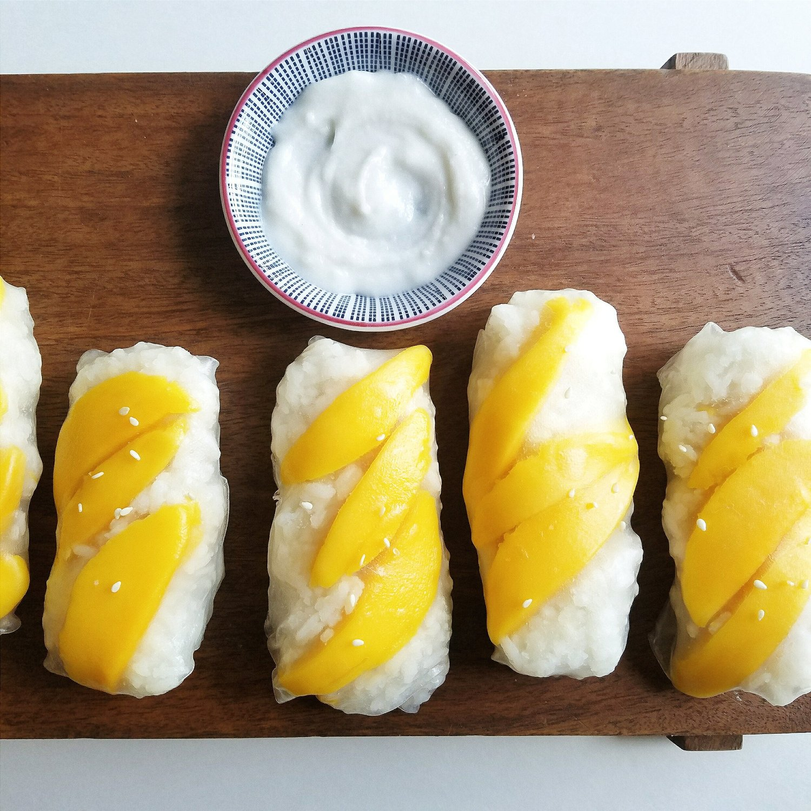
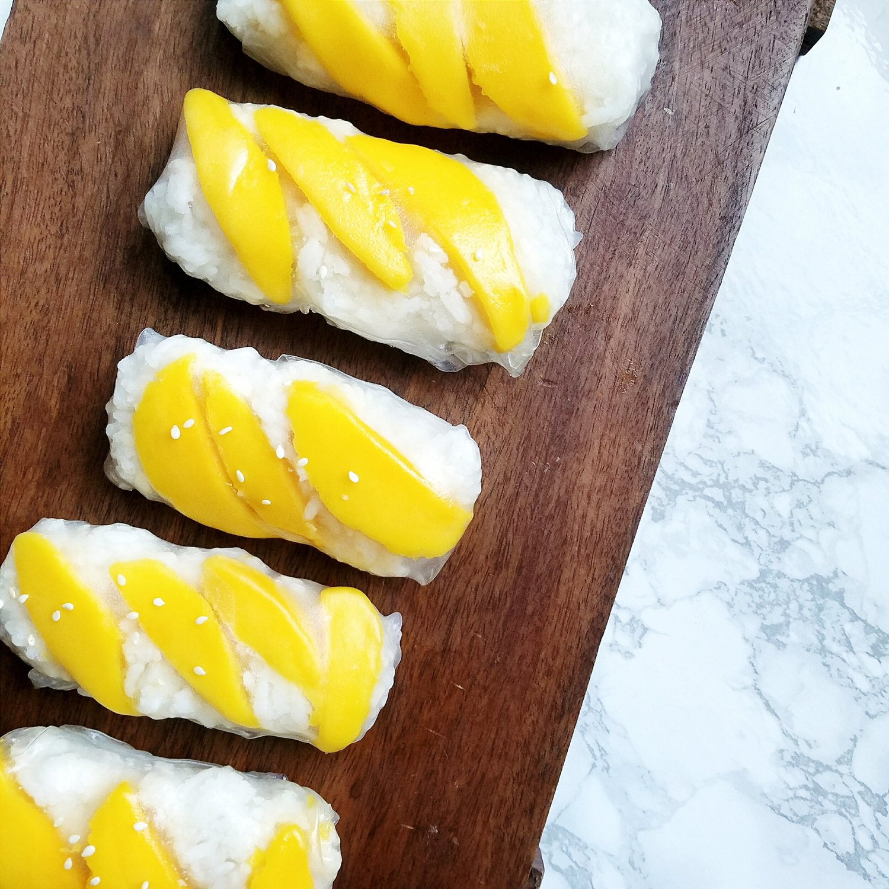

Coconut Sticky Rice Rolls with Mango (vegan, gluten free)


This recipe for Sticky Rice Rolls with Mango is pretty different from the rest of my blog in the sense that this has....sugar! Although this recipe is still vegan and gluten free, I usually don't make or post recipes with sugar in it. But I've made this a couple of times in some What I Ate Today videos, and I had a lot of requests for the recipe, so here it is!
I usually avoid sugar for a couple of reasons. When I first started my healthy journey in 2011, my sweet tooth was definitely hardest for me to get rid of. For me, the only way to combat it was to completely omit sugar from my diet and find alternatives. It certainly worked out in my favor, and I really enjoyed that decision! Once I developed orthorexia and needed to gain weight, I kind of went polar opposite and started to just eat junk under the pretense of... oh "if it fits my macros" then it's fine. But...it started to take a toll on my health, fitness, and mental health. Paired with me breaking my foot, it wasn't good. I was binging on sweet things and posted a few youtube videos on that struggle too... Currently, I have a nice balance. I am aware that once I allow sugar in my diet, I kind of go overboard. So I still keep it out when possible, but I also know that it is okay to have now and again, just not every day or unnecessarily.
Especially with cycling long durations lately, I have been making this recipe to help me compensate for calories burned. I really enjoy the rapid energy it gives me. Again, I don't make this daily, but maybe every 2-3 weeks I make a batch or just a portion to enjoy. When I feel a craving or urge to binge on the previously mentioned foods (sweet rice desserts), I make this myself rather than buying 4-5x this portion at a store. For some reason making my own food has always been easier for me to portion than it is when I buy food at stores.
I've tried making this several times myself, and this recipe is the most authentic it gets to thai coconut sticky rice bought at a restaurant. I went through several batches of sub-par failures to finally find this perfect method. The texture is a perfect mix of chewy and soft. The taste is full, sweet, and so satisfying. The coconut cream is probably my favorite part since it is so thick and sweet! Almost like ice cream. Even if you don't want to go through the full process of making the rice paper rolls with mango, this recipe is great to enjoy if you just make the rice and coconut cream.
For the authentic texture, you need a rice steamer (I will be posting a video of this very soon). If you don't have a rice steamer, you can still make the recipe it just won't be as authentic in texture and taste. It's just...okay. Personally if I didn't have a steamer I just wouldn't make it, but feel free to try yourself! Rather than steaming then adding the coconut milk, cook the rice like normal, then let the cooked rice sit in the coconut milk/sugar mixture for 2 hours before serving.
This coconut sticky rice rolls with mango recipe can be a little tedious, but I highly recommend you try it out if you're wanting a new dessert! Remember moderation if you struggle with sugar control like me, but certainly enjoy it!! This recipe is vegan and gluten free and great for replenishing the body's energy.
Coconut Sticky Rice Rolls with Mango
Serves: 2-4, makes 8 rolls
Rolls
-
1 cup uncooked thai sticky rice
-
1/2 can refrigerated coconut milk (~3/4 cup)
-
1/4 cup granulated sugar
-
1 ripe mango
Coconut Cream
-
1/2 tsp cornstarch
-
1 TBSP water
-
1/4 cup refrigerated coconut milk
-
1 tsp sugar
-
Rinse the uncooked rice & let it soak in water for 5 hours or more. This is necessary for a soft texture.
-
Strain the rice from the water and place in a steaming pan over boiling water. If your pan has large holes, use a cheesecloth before placing the rice to prevent it from falling through. Be sure to evenly spread the rice so it cooks evenly. Cover & let steam for 15 minutes.
-
Remove the partially cooked rice and mix in a bowl with the canned coconut milk & sugar. Be sure you are using only the thick, white part of the coconut milk; discard the liquid portion.
-
Place the rice back in the steaming pan. Cover and let steam another 15-20 minutes, until desired texture is reached (ie cooking longer makes softer).
-
Remove and let cool for an hour.
-
Dampen a rice paper wrap. Once malleable, add some sliced mango, some rice, and then wrap!! Repeat to make 8 wraps.
-
Serve with chilled coconut cream. To make the cream, dissolve the cornstarch in water. In a small saucepan, add 1/4 cup coconut milk and bring to a near boil (again, only using the thick white portion of the can). Once near boiling, lower the heat, then add the dissolved cornstarch and sugar, stirring constantly. As soon as the sauce thickens, it's done! It will thicken even further once chilling in the fridge for at least an hour.
This is best served cooled to room temp or chilled first and then only slightly heated (in my opinion), but it can be warm too! Just be sure you at least chill once to allow the coconut cream and flavors to fully settle in.